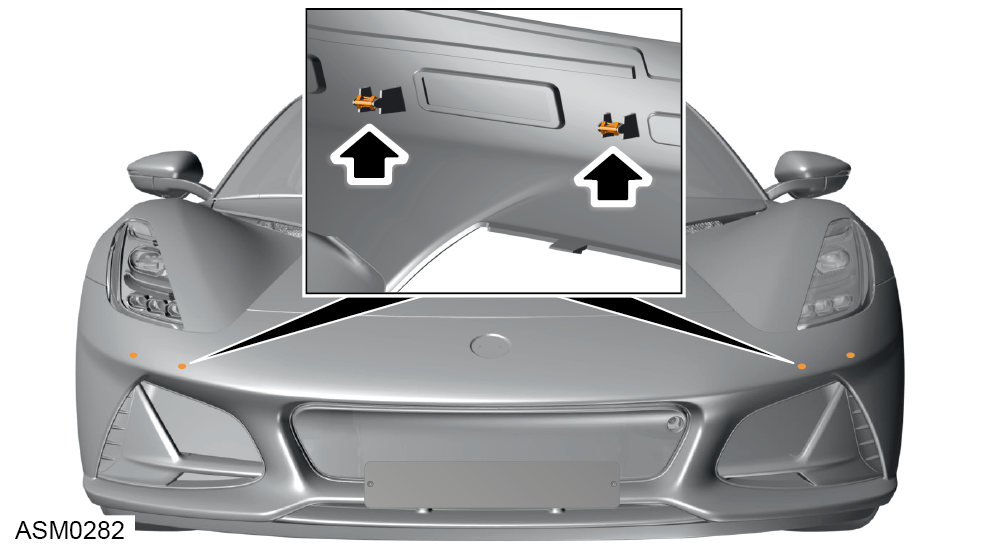
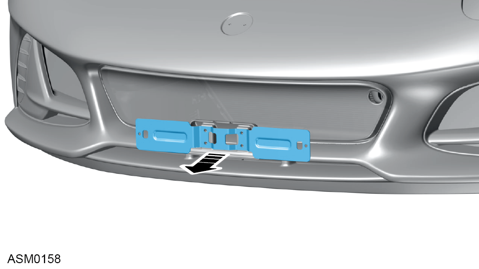
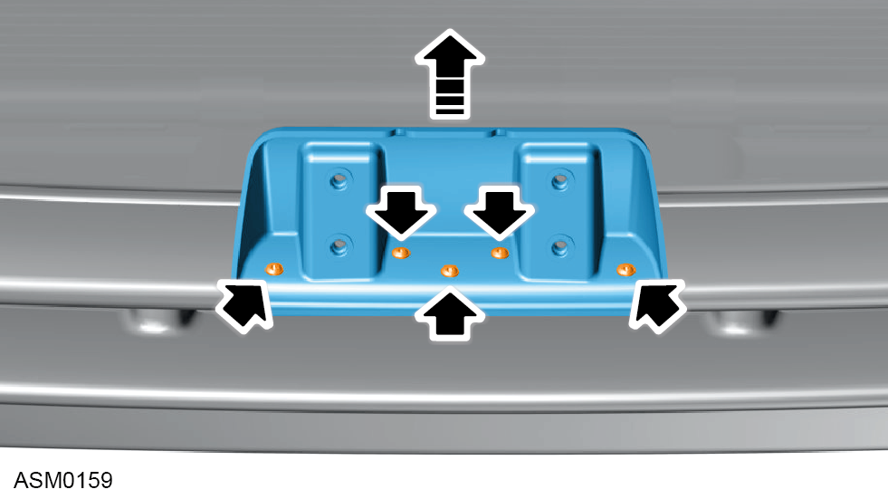

Bumper - Front
Print
Operation Code: 10.23.16-02
Removal
- Open access hatch - front. Refer to procedure.
- Remove wheelarch liner - front - left side. Refer to procedure.
- Remove wheelarch liner - front - right side.
NOTE: Procedure is the same for left side component.
- Remove undertray - front. Refer to procedure.
- Apply tape to protect paintwork of adjoining panels before removing the bumper.
- Remove M6x16 bolts (x8) securing bumper to upper bumper support. Torque 6 Nm.
- Remove M6x16 bolt with washer securing bumper to left side reinforcement bracket.
- Remove M6x20 bolts with washers (x3) securing bumper to left side reinforcement bracket.
- Remove screw securing bumper to reinforcement left side.
- Remove M6x16 bolt with washer securing bumper to right side reinforcement bracket.
- Remove M6x20 bolts with washers (x3) securing bumper to right side reinforcement bracket.
- Remove screw securing bumper to reinforcement right side.
- Remove M6x16 bolts (x4) securing bumper to air duct bracket.
- Disconnect harness connectors (x2) from left and right side front parking sensors.

- Disengage clips (x4) below headlamp area left and right sides.
- Using assistance, pull bumper forward from mounts and away from vehicle.
Do not carry out further disassembly if component is removed for access only.
- Remove screws (x2) securing licence plate to licence plate bracket and remove licence plate.
- Remove M6x16 bolts with washers (x4) securing licence plate bracket to plinth.

- Remove licence plate bracket from vehicle.

- Remove screws (x5) securing plinth to bumper.
- Remove plinth from vehicle.
- Remove fasteners (x12) securing wind deflector to front bumper and remove wind deflector from front bumper.
- Disengage clips (x12) securing centre grille to bumper and remove centre grille.
- Disengage clips (x14) securing centre grille frame to bumper and remove centre grille frame.
- Remove screws (x6) securing LH lower grille to bumper and remove left side lower grille.
- Remove screws (x2) and clips (x6) securing LH lower grille frame to bumper and remove left side lower grille frame.
- Repeat steps 26 and 27 for right side of bumper.
- Remove bolts (x4) securing lower bumper to bumper.
- Disengage lower bumper from bumper and remove lower bumper.
Installation
- Installation is the reverse of removal procedure except for the following:
- If you install plinth to a new bumper do the following procedure:
- With masking tape to protect front bumper, measure and mark the centre of the front bumper as shown.
- Position plinth on bumper so centre of plinth aligns with centre mark of bumper and profile of plinth engages with edge of bumper.
- Use the plinth as a template to mark the fixing hole positions on the bumper.
- Remove plinth from bumper and pre-drill fixing hole positions.
- Continue to install plinth to bumper as reverse of removal procedure.
- Check fender gap and flush tolerances - see Alignment Specifications for Body Panels and Closures section.